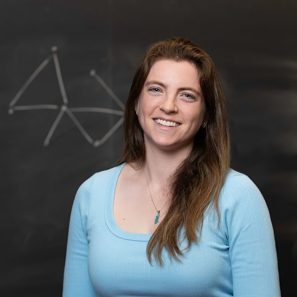

Yael Kirkpatrick
Hi! I am a sixth year PhD student in MIT's department of Mathematics. I am very fortunate to be advised by Virginia Vassilevska Williams.
I am broadly interested in problems in graph algorithms and fine grained complexity.
Before coming to MIT I received my bachelor's degree in mathematics and computer science from the Hebrew University of Jerusalem, Israel.
I am grateful to be supported by an NSF Graduate Research Fellowship.

yaelkirk [at] mit [dot] eduPublications [Google Scholar] [Authors are in alphabetical order]
Improved Approximation of Min-Distances in Near-Linear Time
The Cost of Changing Edges for Diameter Computation and More
New Diameter Approximations via Distance Oracle Techniques
Preprocessed 3SUM for Unknown Universes with Subquadratic Space
Improved Additive Approximation Algorithms for APSP [Recorded Talk]
Shortest Paths in Multimode Graphs
Beyond 2-Approximation for k-Center in Graphs [Recorded Talk]
Agent Motion Planning as Block Asynchronous Cellular Automata: Pushing, Pulling, Suplexing, and More
Fast 2-Approximate All-Pairs Shortest Paths
Cooperative Clustering Techniques for Space Network Scalability
Preprints
Graph Threading with Turn Costs
On the Conditional Optimality of Chiba and Nishizeki's Algorithms
Other
Talk to me about gymnastics, glass blowing or flying!